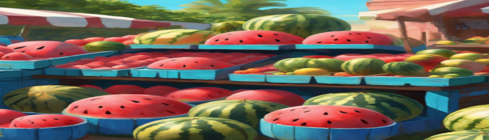
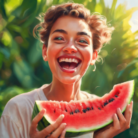

**História da Frutaria Vermelho Vivo**
Em um pequeno vilarejo pitoresco, cercado por colinas verdes e banhado pelo sol dourado, surgiu a ideia de criar uma frutaria que celebrasse as cores e sabores mais vibrantes da natureza. Inspirada pelas frutas vermelhas que sempre foram o destaque nas mesas da família, nasceu a "Vermelho Vivo".

A paixão pela qualidade e frescor das frutas vem de gerações. A bisavó Rosa, conhecida por seu jardim encantado, cultivava morangos, framboesas e cerejas com tanto amor que cada fruto parecia uma joia. Seu segredo? O carinho e respeito pela terra e pelo tempo certo de cada colheita.
Seguindo essa tradição, a "Vermelho Vivo" se compromete a oferecer o melhor das frutas vermelhas, colhidas no auge do seu sabor e trazidas diretamente das mãos dos agricultores locais. Mais do que uma frutaria, queremos ser um pedacinho do paraíso das frutas, onde cada mordida é uma viagem ao passado, repleta de doçura e saudade.
Venha conhecer a nossa história, provar nossas delícias e levar para casa o frescor e a riqueza das frutas vermelhas, selecionadas com o mesmo cuidado e amor que nossa bisavó Rosa dedicava ao seu jardim.